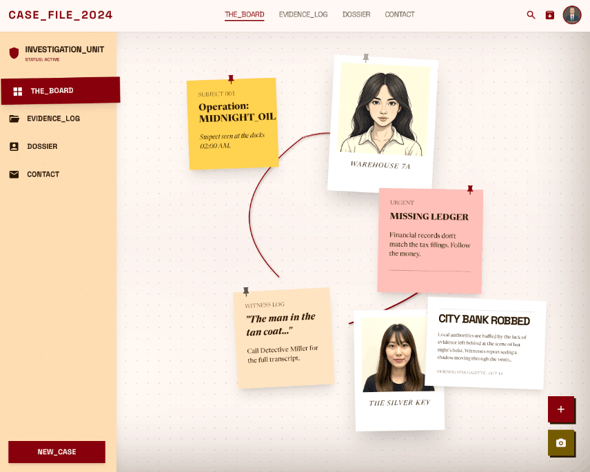
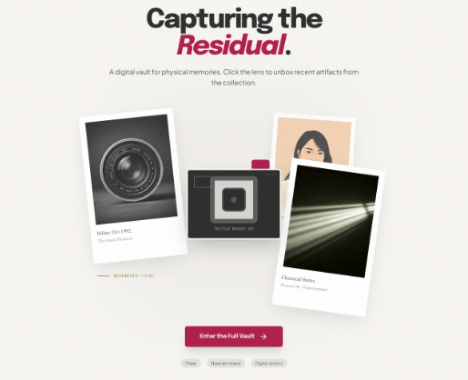
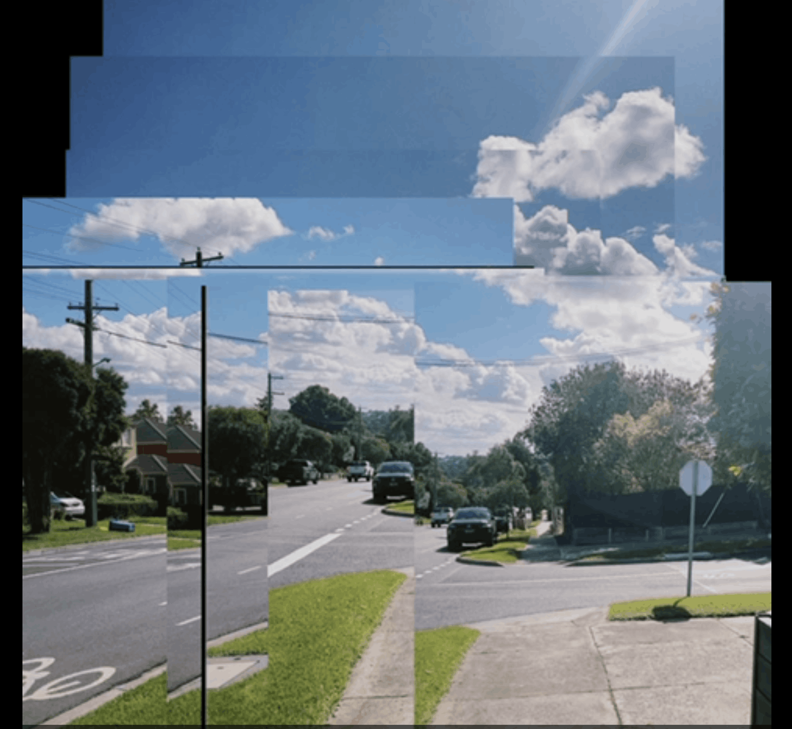
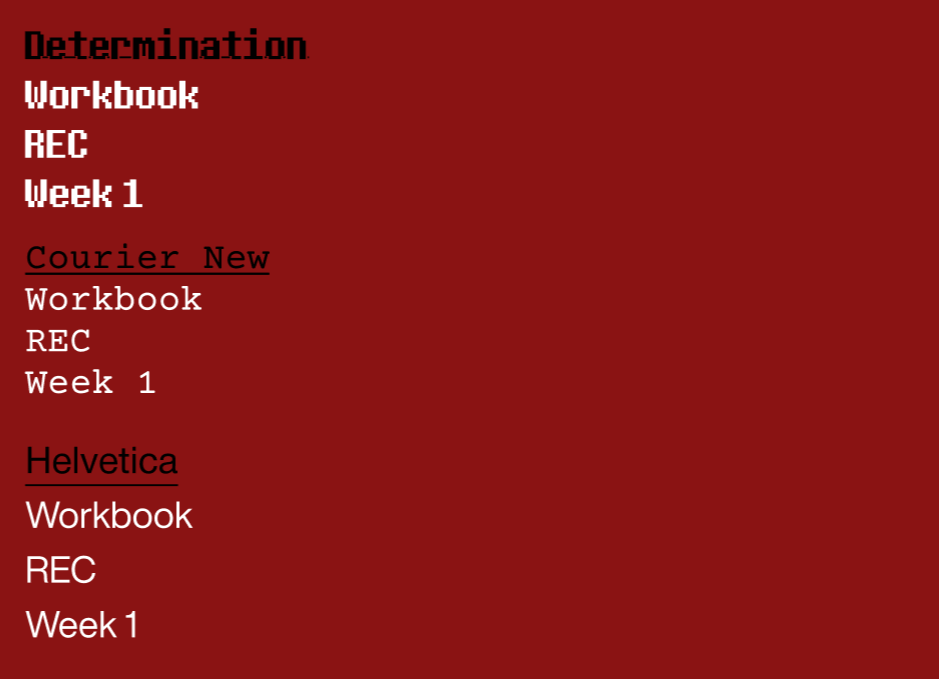
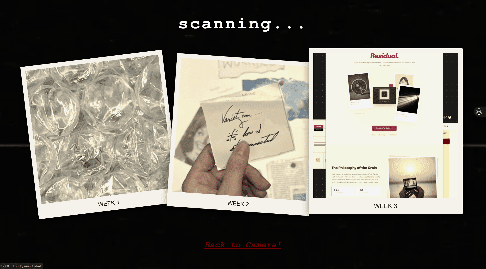
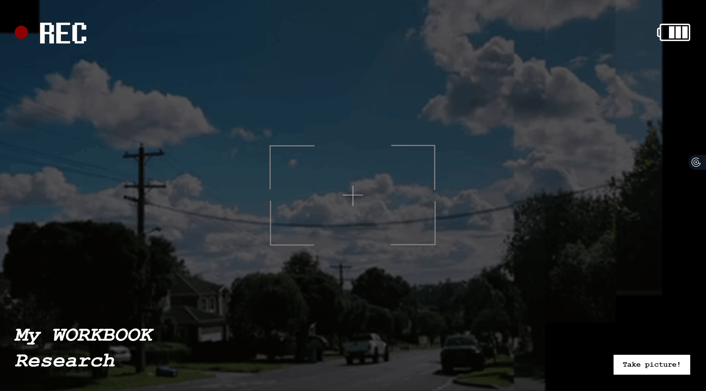

In Week 3"s Tutorial, we experimented with Stitch, a new AI software that was released literally the day before. Using Stitch, we gave it prompts and asked it to generate some prototypes that replicated our workbook designs. We then measured the strengths and weaknesses of stitch and how we as designers felt about its development. The conclusion was that whilst it was competent in generating designs, the templates tended to be extremely repetitive, with a very ai generated design. (the websites gave off a sort of plastic, manufactured feeling as opposed to human coded websites). We then tried pushing it further until finally, after many iterations, a tangible design could be acceptable and maybe useful.

Screenshot of my Detective Pin up Prototype result from Stitch
I attempted stitch with both my designs. For my detective pin-up design, stitch surprisingly generated a design that was extremely similar to my hand drawn wireframe without any specific instruction. The prompt I gave it was simple: ' I want to design a website where the main concept is a detective pin up board. The entire pin up board will be my workbook and each pin up will be one of my projects. I want the sticky notes to be draggable andthe user to have the ability to make connections (red lines) between pins.' And yet stitch was able to generate something I thought was original. This thus prompted me to think in what way can I create an interactive experience that AI perhaps cannot create just yet with their current ability. This hence led me to try prompt my current wip workbook design of the diigicam. This result was less than satisfactory and hence, I concluded that the creativity of AI software is quite limited when it comes to creatively constructing interactive experiences.

Screenshot of my Digital Camera Prototype result from Stitch
After class, I went and created these videos/animations using a camera mode in the app DazzCam to simulate the taking of videos. The idea was that after the user 'tales a photo', this video would trigger, simulating the taking of a photo in the website.

Gif of photos animation made in DazzCam App

Screenshot of the fonts considered and used in my workbook
Additionally, I experimented with font choices for my workbook. As I wanted to reference digital cameras, I settled on using Courier as it communicates a type of retro vibe that I thought resembles the filter of digital cameras well. Determination was also quite retro however I only used this for the starting, main camera screen as I thought it replicated the camera settings look the best. Helvetica was then used to reflect the professionalism in photography, where everything is quite refined and clean. I also wanted a font with high readability.

Recording of hover affect applied to photos page
For the development of my workbook, I started adding small animations and hover affects to my website. The first one I added was a hover affect to my polaroids on the week browse screen. This was done through the use of ordering classes with priority (z-index) and overriding properties with !important on hover. A slight shadow was then further added to simulate that the card was literally being picked up. (referencing the paper prototype I made in week 2 tutorial)

Recording of animation and JS used to simulate camera flash
The video I made using DazzCam was then implemented just as I mentioned before. This was done using simple a simple Javascript thread that ran the actions of flash, change background viideo, change background video back all at once in succession. I received assistance from ClaudeAI here as I could not figure out how to flash the white screen (which I used to simulate the camera flash) on my own. I considered editing the video I made in DazzCam in Capcut to consist of a flash at the start however as the video was not the same size as the desktop screen, the flash only covered a small section of the screen and thus wasn’t satisfactory.